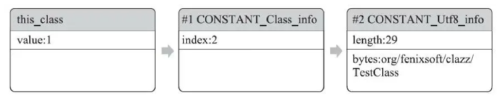

Class文件
作为信息安全的学生，我们需要对ELF文件的格式有着清楚的认识。而Java的Class文件，我们可以认为是Java Virtual Machine上的二进制文件。当然，他们是有区别的，比如：
- Class文件是一组以8个字节为基础单位的二进制流，一般二进制文件是以1个字节为单位的。
- Class文件使用的是Big-Endian，我们熟悉的x86/RISC-V等是Little-Endian的。
详细的可以参考官方文档，还可以自己用javap（类似objdump至于ELF）工具对Class文件进行解析。
一个典型的class文件分为：MagicNumber，Version，Constant_pool，Access_flag，This_class，Super_class，Interfaces，Fields，Methods 和Attributes这十个部分。
按照C语言的风格，可以这么理解Class文件的结构，u2代表的是2字节的无符号数，可能用u16会更符合C语言选手的习惯。u4就是u32。
ClassFile {
u4 magic;
u2 minor_version;
u2 major_version;
u2 constant_pool_count;
cp_info constant_pool[constant_pool_count-1];
u2 access_flags;
u2 this_class;
u2 super_class;
u2 interfaces_count;
u2 interfaces[interfaces_count];
u2 fields_count;
field_info fields[fields_count];
u2 methods_count;
method_info methods[methods_count];
u2 attributes_count;
attribute_info attributes[attributes_count];
}
MagicNumber & Version
每个Class文件的第0-3个字节是MagicNumber， 0xCAFEBABE（咖啡宝贝）注意是大端序的，也就是依次是0xCA,0xFE,0xBA,0xBE。
第4-5字节存储的是Minor Version，次版本号。
第6-7字节存储的是Major Version，主版本号。
Constant_pool
由于常量池中常量的数量是不固定的，所以在常量池的入口需要放置一项u2类型的数据，代表常量池容量计数值（constant pool_count）。所以最大值是65535。不过最多存储65535个常量，因为index是从1开始计数的。
常量池中主要存放两大类常量：字面量（Literal）和符号引用（Symbolic References）。字面量是很好理解的，比如数字、字符串。符号引用则属于编译原理方面的概念。
常量池中的每一项常量，都用不同的结构来具体表示。不过他们的共同点是第一位是u1的tag，代表当前常量属于哪一种类型。见下表
| Constant Kind | Tag | Section |
|---|---|---|
CONSTANT_Class | 7 | §4.4.1 |
CONSTANT_Fieldref | 9 | §4.4.2 |
CONSTANT_Methodref | 10 | §4.4.2 |
CONSTANT_InterfaceMethodref | 11 | §4.4.2 |
CONSTANT_String | 8 | §4.4.3 |
CONSTANT_Integer | 3 | §4.4.4 |
CONSTANT_Float | 4 | §4.4.4 |
CONSTANT_Long | 5 | §4.4.5 |
CONSTANT_Double | 6 | §4.4.5 |
CONSTANT_NameAndType | 12 | §4.4.6 |
CONSTANT_Utf8 | 1 | §4.4.7 |
CONSTANT_MethodHandle | 15 | §4.4.8 |
CONSTANT_MethodType | 16 | §4.4.9 |
CONSTANT_Dynamic | 17 | §4.4.10 |
CONSTANT_InvokeDynamic | 18 | §4.4.10 |
CONSTANT_Module | 19 | §4.4.11 |
CONSTANT_Package | 20 | §4.4.12 |
具体每一种CONSTANT以何种方式存储参考后面的链接。这里只举个例子，Class在常量表的存储。第一个u1就是tag，第二个u2是name_index指向的是一个UTF-8的CONSTANT。
CONSTANT_Class_info {
u1 tag;
u2 name_index;
}
Access_flag
任何一个Class文件都对应着唯一的一个类或接口的定义信息，但是反过来说，类或接口并不一定都得定义在文件里（譬如类或接口也可以动态生成，直接送入类加载器中）。
常量池结束之后，紧跟的2字节代表access_flag,用来标识一些类或接口层次的访问信息。2字节共有16个标志位可用，不过目前只使用了9个。
| Flag Name | Value | Interpretation |
|---|---|---|
ACC_PUBLIC | 0x0001 | Declared public; may be accessed from outside its package. |
ACC_FINAL | 0x0010 | Declared final; no subclasses allowed. |
ACC_SUPER | 0x0020 | Treat superclass methods specially when invoked by the invokespecial instruction. |
ACC_INTERFACE | 0x0200 | Is an interface, not a class. |
ACC_ABSTRACT | 0x0400 | Declared abstract; must not be instantiated. |
ACC_SYNTHETIC | 0x1000 | Declared synthetic; not present in the source code. |
ACC_ANNOTATION | 0x2000 | Declared as an annotation interface. |
ACC_ENUM | 0x4000 | Declared as an enum class. |
ACC_MODULE | 0x8000 | Is a module, not a class or interface. |
this class & super class & interfaces
this_class和super_class都是u2类型数据，而interfaces是一组u2类型数据的集合，集合中元素的个数由interfaces_count指定。Class文件中通过这三项数据来确定类的继承关系。
存储的u2实际上是常量池里面的index，指向一个CONSTANT_Class_info的类描述符常量。查找过程可以用下面的图来表示

field
field_info用于描述接口或者类中声明的变量。Java语言中的“字段”（Field）包括类级变量以及实例级变量，但不包括在方法内部声明的局部变量。我们可以如何修饰一个字段呢？比如作用域（public、private、protected修饰符）、是实例变量还是类变量（static修饰符）、可变性（final）、并发可见性（volatile修饰符，是否强制从主内存读写）、可否被序列化（transient修饰符）、字段数据类型（基本类型、对象、数组）、字段名称。
field_info {
u2 access_flags;
u2 name_index;
u2 descriptor_index;
u2 attributes_count;
attribute_info attributes[attributes_count];
}
access_flag和类中的access_flag是很像的，不过标识不完全一样，因为修饰字段和修饰类文件，使用的关键词不太一样。
| Flag Name | Value | Interpretation |
|---|---|---|
ACC_PUBLIC | 0x0001 | Declared public; may be accessed from outside its package. |
ACC_PRIVATE | 0x0002 | Declared private; accessible only within the defining class and other classes belonging to the same nest (§5.4.4). |
ACC_PROTECTED | 0x0004 | Declared protected; may be accessed within subclasses. |
ACC_STATIC | 0x0008 | Declared static. |
ACC_FINAL | 0x0010 | Declared final; never directly assigned to after object construction (JLS §17.5). |
ACC_VOLATILE | 0x0040 | Declared volatile; cannot be cached. |
ACC_TRANSIENT | 0x0080 | Declared transient; not written or read by a persistent object manager. |
ACC_SYNTHETIC | 0x1000 | Declared synthetic; not present in the source code. |
ACC_ENUM | 0x4000 | Declared as an element of an enum class. |
name_index显然是字段的简单名称，是对UTF-8常量池项的引用。descriptor_index是描述符，也是对UTF-8常量池项的引用。
例如，Java中的int a，a就是简单名称，描述符是I代表基本类型int。描述符可以认为是描述了字段的类型，不过是用UTF-8串来表示的，具体的规范还是参考标准文档。
描述符来描述方法的时候，按照先参数列表、后返回值的顺序描述，参数列表按照参数的严格顺序放在一组小括号“()”之内。如方法void inc()的描述符为()V。方法int indexOf(char[]source, int sourceOffset, int sourceCount, char[]target, int targetOffset, int targetCount, int fromIndex)的描述符为([CII[CIII)I。
attributes集合，用于存储一些额外的信息，字段表可以在属性表中附加描述零至多项的额外信息。例如将字段m的声明改为final static int m=123，那就可能会存在一项名称为ConstantValue的属性，其值指向常量123。
字段表集合中不会列出从父类或者父接口中继承而来的字段，但有可能出现原本Java代码之中不存在的字段，譬如在内部类中为了保持对外部类的访问性，编译器就会自动添加指向外部类实例的字段。
Methods
Class文件存储格式中对方法的描述与对字段的描述采用了几乎完全一致的方式，方法表的结构如同字段表一样，依次包括访问标志（access_flags）、名称索引（name_index）、描述符索引（descriptor_index）、属性表集合（attributes）几项。这些数据项目的含义也与字段表中的非常类似，仅在访问标志和属性表集合的可选项中有所区别。
Attributes
Attribute是最复杂的表，就是不固定的东西都往这里装。
对于每一个属性，它的名称都要从常量池中引用一个CONSTANT_Utf8_info类型的常量来表示，而属性值的结构则是完全自定义的，只需要通过一个u4的长度属性去说明属性值所占用的位数即可。一个符合规则的属性表是下面的结构。具体的属性内容是完全自定义的。
attribute_info {
u2 attribute_name_index;
u4 attribute_length;
u1 info[attribute_length];
}
比如代码就是存放在这里的。